Synth was a monthly club night in San Francisco that I co-founded with Brian Jackson in February 2001 and ran as its art and music director until July 2002. It put live electronic music, video art and installation in the same room, and it won two Best of the Bay awards: Best Club to Hear the Future from the SF Bay Guardian in 2001, and Best Pickup Spot for HAL 9000 from SF Weekly in 2002.
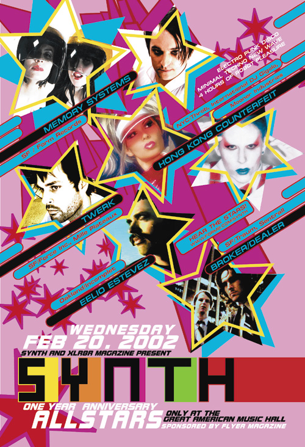
We described the music as “dreamy electronica electro funk dub new wave robot porn soundtracks, abstract techno and other things synth”. Synth ran monthly at the Blind Tiger, 787 Broadway at Powell. “The idea is to throw a party for people from different scenes,” Brian told Free magazine, and it worked: house heads, designers, techies, painters and gamers all came. Live video ran across the walls, synthesizers sat next to turntables and laptops, and nothing on the screens was planned in advance. The visuals moved in real time with the sound.
Video art was as important as the music. Scott Pagano and I were Synth’s resident live video artists. Sue Dean, Devan Simunovich (c-trl), Chris Musgrave, Jenny Young, Seed() and girLie8 joined us, and Astria Suparak brought a film screening. Brian, Jenny Young and I also played as Memory Systems, an electronic trio on Form Records.
On 20 February 2002, Synth took over the Great American Music Hall, co-presented by XLR8R and sponsored by FLYER Magazine. Memory Systems, Hong Kong Counterfeit from New York, Twerk, Broker/Dealer and Eelio Estevez played live, with visuals by Scott Pagano, Sue Dean and Devan Simunovich. Booths from Alchemind, POND Independent Arts and Media, Orthlorng Musork and the Drum Machine Museum filled the hall.
In March and April 2002 we ran five nights of art, electro and nu wave across the city: Travelogue at the Blind Tiger; a Mooner Industries label showcase at Hush Hush; Miss Kittin and The Hacker with Memory Systems and Cybrid at the Great American Music Hall, cancelled when their flights fell through; Le Syndicat Electronique and It & My Computer from France; and the launch screening of Reline, our video art DVD, at BAVC.
In May 2002, Beyond the Future, Part 1 at the Galaxy Club brought Memory Systems, Sote (Ata Ebtekar, Warp Records) and the Berlin collectives Fork Unstable Media and Flora + Fauna together for one night.
Synth said goodbye to San Francisco with a farewell party at An Sabin on 5 July 2002, with DJ sets by Brian, me and Beat Broker, before we moved to New York. That September, Memory Systems played Club Luxx in Brooklyn on a bill with Legowelt, presented by Safety in Numbers and VICE.
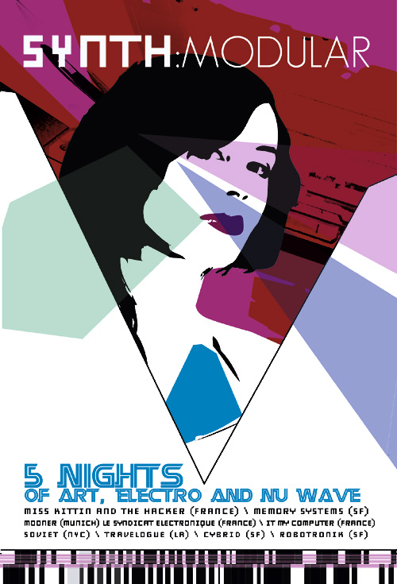
Synth: Modular, March and April 2002
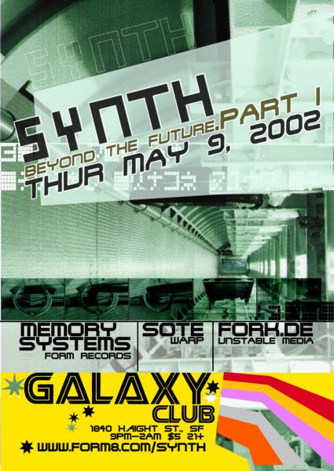
Beyond the Future, Part 1, Galaxy Club, May 2002
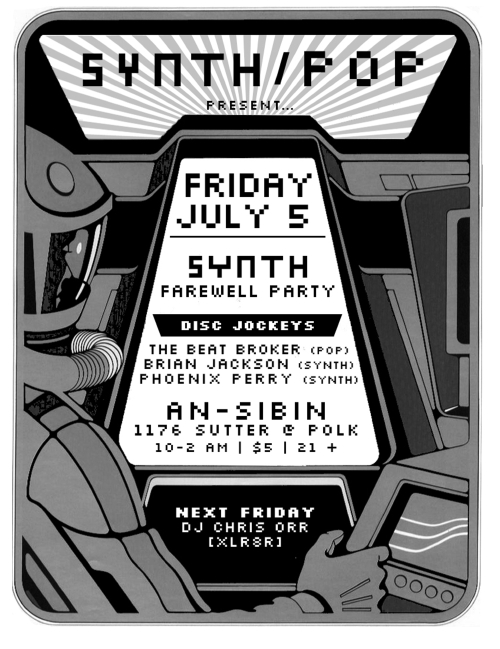
Synth/Pop farewell party, An Sabin, July 2002
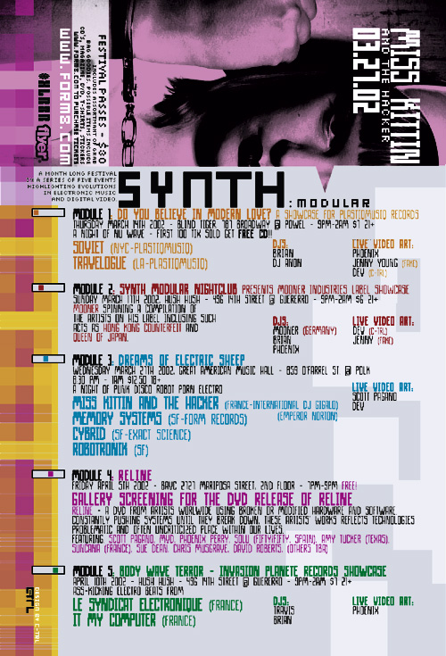
Synth: Modular, the five nights
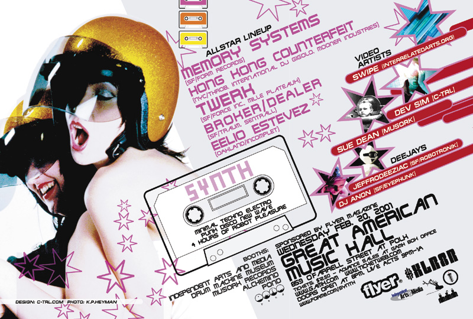
One-year anniversary line-up
“Those cutting-edge kids at Synth help keep your head out of the clouds and your eyes in front of you, since you’ll need all of your senses to keep from getting knocked down.” SF Bay Guardian, Best Club to Hear the Future, 2001.
SF Weekly named Synth the Best Pickup Spot for HAL 9000 in its Best of San Francisco 2002.
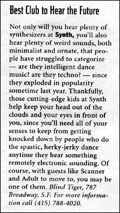
SF Bay Guardian, Best of the Bay, 2001
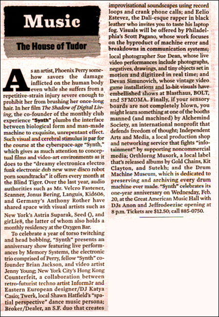
SF Weekly, February 2002
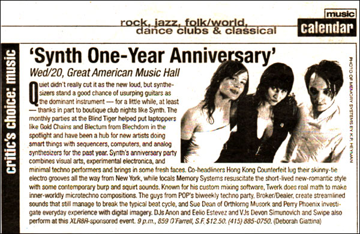
SF Bay Guardian, critic’s choice, February 2002
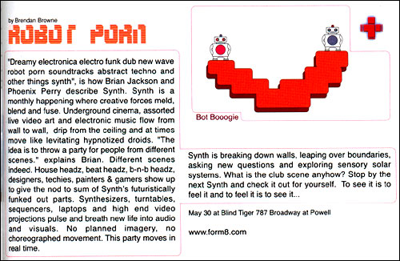
Free magazine, “Robot Porn”, 2001
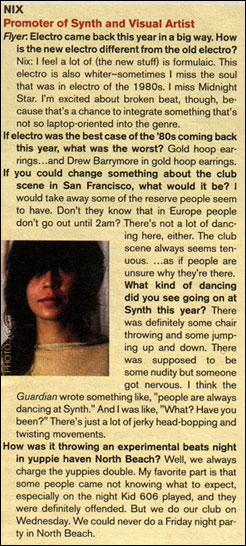
SF Flyer, Best of 2001 interview
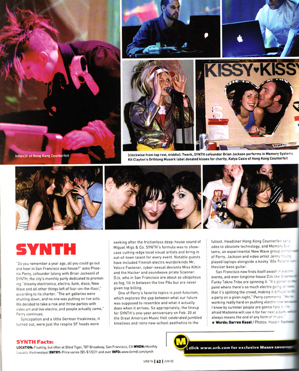
URB magazine, June 2002